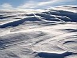
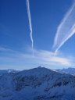
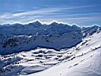
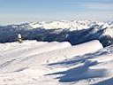
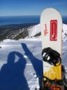
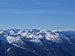
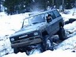
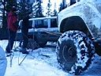
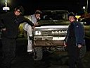

|
|
|
Открытие зимнего сезона 2006-2007 на Мамае День третий, подскакиваю пораньше и бегом в лагерь улан-удэнцев, как бы без меня не ушли. Вчера Сергей Лавинович хотел затропить на северные вершины Мамая, однако лихорадка строительства чумавого городка зацепила и его :) Ладно, успею сбегать на Мамай в одного, потом надо собираться и на электричку двигать. А бегать на вершину Мамай с доской не совсем быстро, особенно последнюю стометровку - через два часа, почти на карачках, обдуваемый хорошим ветерком, забрался на точку медитации. Горы, горы, горы. Удивительное разнообразие, заманчивые и никем не катаные кулуары и поля. Будут ли силы, будет ли время когда-нибудь до них дойти и покататься ?       Будет! Не сегодня, но скоро. А сейчас - только вниз. Все надо делать вовремя и аккуратно. Аккуратно проехать по стланнику, аккуратно проскочить узкое и крутое место между скал, аккуратно нарезать дуги между кустов и елок, которые пока еще на завалены снегом. Все, приехал. Уже внизу. Записан в памяти маршрут, ощущения прокручены несколько раз, восполнены пробелы прошлого спуска, подмечены ошибки этого. Два часа подъема, 10 минут спуска. Откуда опять взялся прилив сил, откуда опять желание бежать наверх :) Народ дружно сворачивает палатки, пакует рюкзаки и поворачивает лыжи на тропу, которая ведет вниз. Праздники заканчиваются, пора домой. Говорю "досвидания" Мамаю, солнечной полянке, ребятам из Байкальского экстрима и качу вниз по широкой тропе.    Однако приключение не кончилось. Согласился на предложение Димы Яскина прокатиться по разухабистой лесной дороге на джипе, поучаствовал в операции "Разворот чудовища на месте с помощью лебедки и другого чудовища", поучился искуству запихивания кучи снаряги в багажник...
День первый... День второй...
Ноябрь 2006. Белокрылов А.Ю. Слюдянка. |
Склон под Двухглавой, по которому вчера здорово прокатились. |